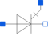

ThyristorSimple Thyristor Model |

|
Information
This information is part of the Modelica Standard Library maintained by the Modelica Association.
This is a simple thyristor model with three pins: Anode, Cathode and Gate. There are three operating modes:conducting, blocking and reverse breakthrough.
As long as the thyristor is in blocking mode it behaves like a linear resistance Roff=VDRM^2/(VTM*IH). But if the voltage between anode and cathode exceeds VDRM or a positive gate current flows for a sufficient time the mode changes to conducting mode. The model stays in conducting mode until the anode current falls below the holding current IH. There is no way to switch off the thyristor via the gate. If the voltage between anode and cathode is negative, the model represents a diode (parameters Vt, Nbv) with reverse breakthrough voltage VRRM.
The dV/dt switch on is not taken into account in this model. The gate circuit is not influenced by the main circuit.
Parameters (14)
| useHeatPort |
Value: false Type: Boolean Description: =true, if heatPort is enabled |
|---|---|
| T |
Value: 293.15 Type: Temperature (K) Description: Fixed device temperature if useHeatPort = false |
| VDRM |
Value: 100 Type: Voltage (V) Description: Forward breakthrough voltage |
| VRRM |
Value: 100 Type: Voltage (V) Description: Reverse breakthrough voltage |
| IDRM |
Value: 0.1 Type: Current (A) Description: Saturation current |
| VTM |
Value: 1.7 Type: Voltage (V) Description: Conducting voltage |
| IH |
Value: 6e-3 Type: Current (A) Description: Holding current |
| ITM |
Value: 25 Type: Current (A) Description: Conducting current |
| VGT |
Value: 0.7 Type: Voltage (V) Description: Gate trigger voltage |
| IGT |
Value: 5e-3 Type: Current (A) Description: Gate trigger current |
| TON |
Value: 1e-6 Type: Time (s) Description: Switch on time |
| TOFF |
Value: 15e-6 Type: Time (s) Description: Switch off time |
| Vt |
Value: 0.04 Type: Voltage (V) Description: Voltage equivalent of temperature (kT/qn) |
| Nbv |
Value: 0.74 Type: Real Description: Reverse Breakthrough emission coefficient |
Connectors (4)
| heatPort |
Type: HeatPort_a Description: Conditional heat port |
|
|---|---|---|
| Anode |
Type: PositivePin |
|
| Cathode |
Type: NegativePin |
|
| Gate |
Type: PositivePin |
Used in Examples (1)
|
Modelica.Electrical.Analog.Examples Thyristor demonstration example |
Used in Components (1)
|
Modelica.Electrical.Analog.Semiconductors Simple triac, based on Semiconductors.Thyristor model |